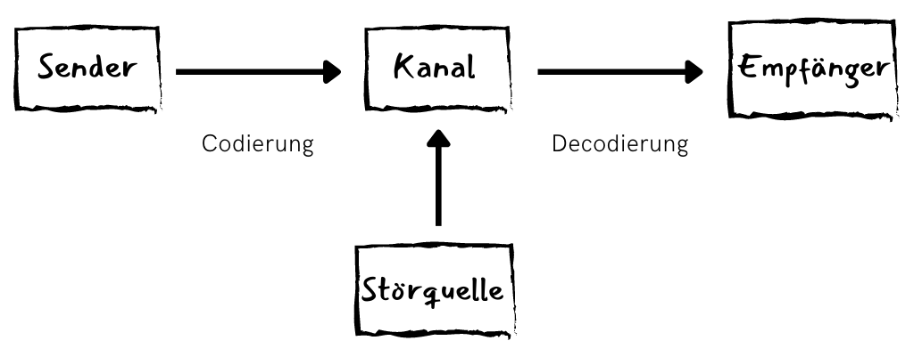

Kommunikationsbedingungen

Baduras Kommunikationsmodell (1971, vereinfacht)
Von Kommunikation kann erst dann gesprochen werden, wenn vonseiten des Senders eine Nachricht übermittelt wurde und der Empfänger diese Information aufgenommen und im Sinne der damit verbundenen Handlungsorientierung „verstanden“ hat.Eine wichtige Voraussetzung für erfolgreiche Kommunikation ist ein (zumindest teilweise) gemeinsames Bezugssystem der Kommunikationspartner; Bezugssystem meint hier, dass die Beteiligten an einer Kommunikationssituation den gleichen Zeichenvorrat aufweisen und dementsprechend die verwendeten Zeichen verstehen. Benutzt jemand beispielsweise einen Ausdruck, der dem Kommunikationspartner nicht geläufig ist, wird dieser weder die Aussage noch die damit verbundene Handlungsorientierung verstehen können, es sei denn, der Kontext lässt eine adäquate Erschließung des Gemeinten zu. Darüber hinaus muss das Gesagte nicht nur inhaltlich, sondern zunächst auch akustisch verstanden werden. Sprachfehler oder technische Übertragungsfehler können hierbei Störfaktoren darstellen.